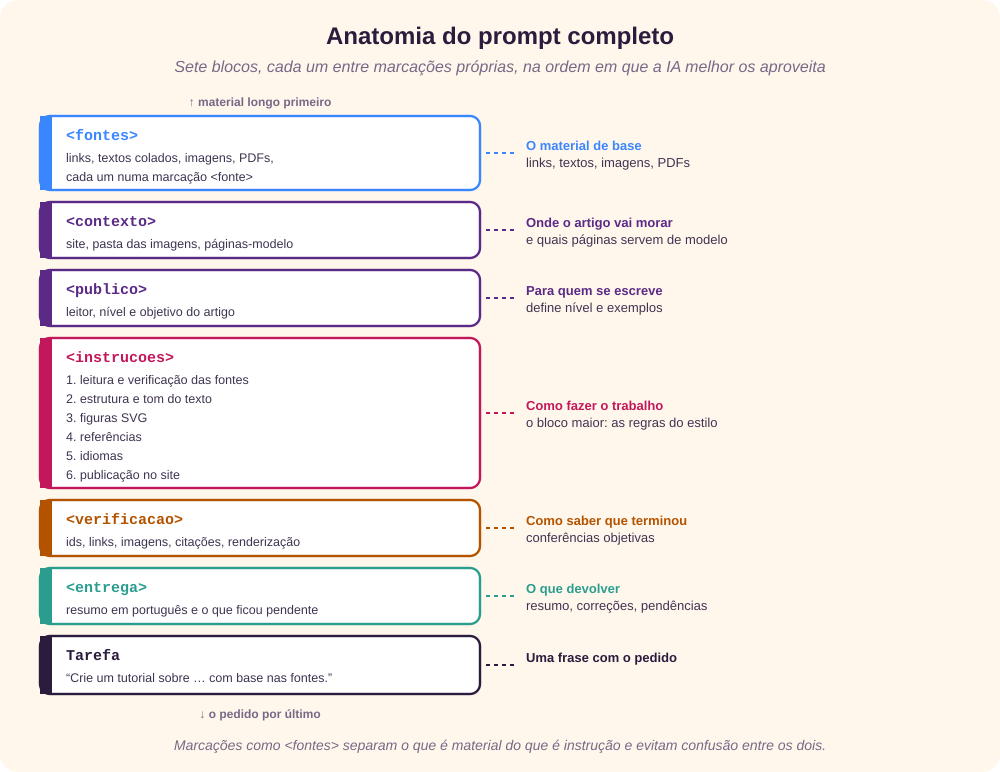
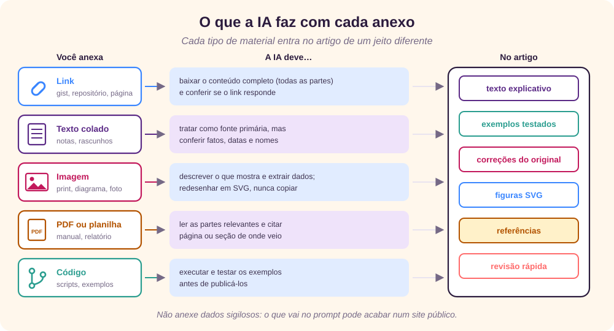
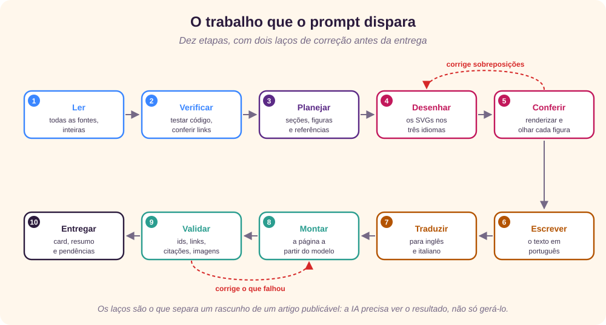

Por que um prompt completo
Os tutoriais deste site, como o guia de SQL e o de Gantt com PlantUML, foram gerados por uma IA a partir de material já existente: um gist, um curso em Markdown, um documento antigo. Todos seguem o mesmo modelo: três idiomas, figuras em SVG que explicam os conceitos, exemplos testados, erros do original corrigidos e referências numeradas. [15] [16]
Esse modelo não está na cabeça da IA. Um prompt, o texto com o pedido, precisa dizer tudo o que define o resultado. [1] [7] A documentação da Anthropic resume a regra: mostre o prompt a um colega que não conhece a tarefa; se ele ficar confuso, a IA também ficará. [2]

Este tutorial mostra o prompt completo que reproduz o estilo do site, explica cada bloco e dá dicas para anexar o material de base. Ele foi pensado para o Claude Code, um assistente que trabalha direto na pasta do projeto: lê arquivos, executa comandos, gera imagens e confere o resultado. Com adaptações, serve para outras ferramentas. [4]
Anatomia do prompt
O prompt tem sete blocos. Cada um fica entre marcações no estilo XML, como <fontes> e </fontes>, que separam o material das instruções e evitam que a IA confunda um com o outro. [2]

A ordem também importa. Com documentos longos, a Anthropic recomenda pôr o material no topo do prompt e o pedido no fim; em seus testes, perguntas feitas depois dos documentos melhoraram as respostas em até 30%. [2]
O prompt completo
Copie o texto abaixo e troque cada {{…}} pelo que se aplica ao seu caso. As partes entre | são alternativas: escolha uma.
<fontes>
<fonte indice="1">
<origem>{{LINK, NOME DO ARQUIVO ANEXADO OU "texto colado"}}</origem>
<conteudo>{{COLE O TEXTO AQUI; DEIXE VAZIO SE FOR LINK OU ANEXO}}</conteudo>
</fonte>
<!-- repita <fonte> para cada link, texto, imagem ou PDF -->
</fontes>
<contexto>
- O artigo será publicado no site estático {{SITE}}, na raiz do repositório.
- Use como modelo as páginas existentes {{PÁGINA-MODELO, ex.: GuiaSQL.html}}:
mesmo cabeçalho, estilos, abas de idioma, índice lateral, barra de
progresso e rodapé. Não invente um layout novo.
- As imagens ficam em rc_images/. A lista de artigos fica em projects.html.
</contexto>
<publico>
- Leitor: {{QUEM VAI LER, ex.: analistas que conhecem o básico de X}}.
- Ao terminar, o leitor deve conseguir: {{OBJETIVO CONCRETO}}.
</publico>
<instrucoes>
1. Leitura e verificação
- Leia todas as fontes por inteiro antes de escrever. Se um link tiver
várias partes ou arquivos, leia todos.
- Trate as fontes como base, não como verdade. Teste o código, os
comandos e as fórmulas sempre que possível.
- Quando encontrar um erro ou um trecho desatualizado, corrija no texto
e diga ao leitor o que mudou em relação ao original.
- Não invente fatos, números, datas ou citações. O que não puder
confirmar, retire ou marque como não verificado.
2. Estrutura e tom
- Classificação: Tutorial.
- Cabeçalho: rótulo "Tutorial", título, subtítulo de uma frase, autor
{{AUTOR}}, data de publicação e a linha "Revisado e formatado usando
Anthropic Claude".
- Seções: introdução com contexto e pré-requisitos; conceitos do mais
simples ao mais complexo; exemplos práticos; um quadro "Para fixar";
uma "Revisão rápida" com 8 a 10 perguntas e respostas recolhíveis;
e "Referências".
- Frases curtas, voz ativa, termos técnicos explicados na primeira vez
em que aparecem. Nada de emojis nem de travessões como pontuação.
3. Figuras
- Crie de {{N, ex.: 4 a 12}} diagramas em SVG, cada um explicando um
conceito: comparações, fluxos, anatomias, antes e depois.
- Um arquivo por idioma: Nome.svg, Nome-en.svg e Nome-it.svg.
- Use a paleta, a fonte e a largura (1000) das figuras existentes; cada
SVG tem <title> e <desc>, e cada <img> tem um texto alternativo que
descreve a figura inteira.
- Se o assunto tiver uma ferramenta que gera imagens (PlantUML,
Mermaid, gráficos), inclua também o resultado real gerado por ela.
- Renderize cada SVG e confira: nenhum texto sobreposto, cortado ou
fora da caixa. Corrija e renderize de novo até ficar limpo.
4. Referências
- Cite com números [n] no ponto em que a informação é usada.
- A fonte original é sempre a referência 1.
- Prefira documentação oficial, normas e enciclopédias. Confira se
cada link responde, e registre a data de acesso.
5. Idiomas
- Português, inglês e italiano, com tradução completa: texto,
figuras, legendas, textos alternativos e, quando fizer sentido,
os nomes usados nos exemplos.
6. Publicação
- Salve a página como {{ARQUIVO}}.html.
- Em projects.html, {{ATUALIZE OS CARDS QUE APONTAM PARA A FONTE ORIGINAL
| CRIE UM CARD NOVO NA CATEGORIA X}} nas três versões de idioma, com o
selo de três idiomas e o endereço do site. Atualize os contadores dos
filtros, se houver.
- Não faça commit.
</instrucoes>
<verificacao>
- Nenhum id duplicado e nenhum link interno quebrado.
- Todas as imagens existem; todas as referências são citadas; nenhuma
citação aponta para uma referência inexistente.
- A página foi aberta e conferida nos três idiomas.
</verificacao>
<entrega>
Ao terminar, responda em português com: o que foi criado, a lista de
figuras, os erros encontrados e corrigidos na fonte, o que não pôde ser
verificado e os arquivos que ficaram sem commit.
</entrega>
Tarefa: crie um artigo no estilo Tutorial sobre {{TEMA}}, com base nas
fontes acima e seguindo todas as instruções.Bloco a bloco
<fontes>: o material de base
Cada fonte vai numa marcação <fonte>, com a origem e, se for texto, o conteúdo. Numerar as fontes facilita pedir que a primeira seja a referência 1 e que as outras sejam citadas pelo número. [2]
<contexto>: onde o artigo vai morar
O pedido mais eficaz para manter o estilo é apontar uma página existente como modelo. Uma página pronta carrega centenas de decisões (cores, fontes, abas, índice, rodapé) que seriam impossíveis de descrever uma a uma. Os exemplos são uma das formas mais confiáveis de orientar o formato. [2]
<publico>: para quem se escreve
O leitor define o nível do texto, o que precisa ser explicado e que exemplos fazem sentido. Um objetivo concreto (“ao terminar, o leitor consegue escrever uma consulta com JOIN”) ajuda a IA a decidir o que entra e o que fica de fora. É também o que define um tutorial: uma aula guiada que leva o leitor a fazer algo, não uma referência para consulta. [9]
<instrucoes>: como fazer o trabalho
É o bloco maior, dividido em passos numerados, porque a ordem e a completude importam. [2]
- Leitura e verificação. O ponto mais importante. Modelos de linguagem podem produzir afirmações falsas com aparência de verdade, as chamadas alucinações. Pedir que o código seja testado e que nada seja inventado reduz esse risco; foi assim que os tutoriais do site encontraram, por exemplo, um mês de outubro excluído de uma expressão regular e um
NOT INque não devolve nada quando háNULL. [8] - Estrutura e tom. Seções fixas tornam os artigos previsíveis para quem lê. A revisão rápida usa o elemento
<details>, que abre e fecha sem JavaScript. Frases curtas e voz ativa seguem as recomendações de guias de estilo técnico. [10] [14] - Figuras. SVG é texto, então a IA consegue criá-lo, corrigi-lo e traduzi-lo como qualquer outro arquivo, e ele fica nítido em qualquer tamanho.
<title>,<desc>e um bom texto alternativo tornam a figura acessível a quem usa leitor de tela; em figuras complexas, o texto alternativo precisa descrever o conteúdo, não só nomeá-lo. [11] [12] [13] - Renderizar e conferir. Sem essa instrução, a IA gera o SVG “no escuro”. Com ela, abre a imagem, vê um rótulo sobre outro e corrige. [6]
- Referências e idiomas. Pedir que cada link seja conferido evita referências quebradas; pedir a tradução “inclusive das figuras” evita um artigo em inglês com diagramas em português.
- Publicação. Diga exatamente quais arquivos mudam e o que não fazer (“não faça commit”), para que a revisão fique com você.
<verificacao>: como saber que terminou
Critérios objetivos, que a IA pode conferir com um script: ids únicos, links internos válidos, imagens existentes e citações coerentes com a lista de referências. Sem eles, “pronto” é uma opinião.
<entrega> e Tarefa
O resumo final é o que você vai ler primeiro. Pedir a lista de erros corrigidos e do que não pôde ser verificado deixa claro onde revisar. A tarefa, uma frase, fica por último, depois de todo o material. [2]
Como anexar as fontes

- Links precisam ser públicos. Um gist ou repositório privado não abre para a IA. Se um gist tiver vários arquivos, diga isso: é fácil ler só o primeiro.
- Texto colado vai dentro de
<conteudo>. É a forma mais segura quando o material não está publicado. - Imagens, como capturas de tela ou fotos de um quadro, são lidas pelo modelo, que consegue descrever e extrair dados delas. Prefira imagens nítidas e recortadas no que importa. Peça que sejam redesenhadas em SVG, e não copiadas: uma imagem de terceiros pode ter direitos autorais. [3]
- PDFs e planilhas funcionam melhor quando você indica as páginas ou abas relevantes.
- Código deve ser executado, não só lido. Diga que ferramentas existem no computador (Node, Python, Java), para a IA saber como testar.
O que acontece depois
Com esse prompt, um assistente como o Claude Code não escreve o artigo de uma vez. Ele percorre etapas, e duas delas são laços de correção: [4] [6]

O trabalho leva de dezenas de minutos a algumas horas, conforme o tamanho da fonte e o número de figuras. Durante esse tempo, a IA deve dar notícias curtas do que está fazendo. Ao receber o resultado:
- Leia o resumo, principalmente os erros corrigidos e o que não foi verificado.
- Abra a página nos três idiomas e passe pelas figuras.
- Confira por amostragem duas ou três afirmações e duas ou três referências.
- Só então faça o commit.
Quando um prompt curto basta
Os tutoriais deste site foram pedidos com uma frase só:
Crie um artigo e o classifique como Tutorial, com base no seguinte link
{{LINK}} inclua referências onde as mesmas forem necessárias ao
entendimento e imagens (SVG) para ajudar na fixação do conteúdoFuncionou porque a conversa já tinha tudo o que o prompt completo diz: páginas-modelo prontas e as convenções combinadas nos primeiros artigos. Numa sessão nova, a mesma frase produziria outra coisa.
Há duas saídas para não repetir o prompt inteiro:
- Guardar as convenções do site num arquivo de memória do projeto, como o
CLAUDE.mddo Claude Code, que é lido no início de cada sessão. O prompt pode então se limitar às fontes, ao público e à tarefa. [5] - Dividir o trabalho em pedidos encadeados (primeiro ler e verificar, depois as figuras, depois o texto), revisando entre um e outro. [2]
Erros comuns
“A IA sabe o estilo do meu site”
Realidade: só se você mostrar. Aponte uma página-modelo.
“Se está na fonte, está certo”
Realidade: fontes antigas têm erros e trechos desatualizados. Peça testes e correções explícitas.
“Pedir imagens basta”
Realidade: sem dizer o formato e o que cada figura deve explicar, vêm imagens decorativas. Peça SVG e conceitos.
“Se a IA gerou, está bonito”
Realidade: sem renderizar e olhar, textos sobrepostos passam despercebidos. Peça a conferência visual.
“Os links citados funcionam”
Realidade: páginas mudam de endereço. Peça que cada link seja testado.
“Quanto mais curto o prompt, melhor”
Realidade: curto só funciona quando o contexto já está em outro lugar, como na conversa ou num arquivo de memória.
Revisão rápida
Tente responder antes de abrir cada pergunta.
1. Onde devem ficar as fontes longas no prompt?
No topo, antes das instruções; a tarefa fica no fim.
2. Para que servem marcações como <fontes>?
Para separar o material das instruções e evitar que a IA confunda um com o outro.
3. Qual a forma mais eficaz de manter o estilo do site?
Apontar uma página existente como modelo.
4. Por que pedir que o código das fontes seja testado?
Porque fontes têm erros e a IA pode repeti-los ou inventar afirmações; o teste revela o que precisa ser corrigido.
5. Por que SVG, e não PNG, para as figuras?
SVG é texto: a IA consegue criá-lo, corrigi-lo e traduzi-lo, e ele fica nítido em qualquer tamanho.
6. O que um bom texto alternativo de figura faz?
Descreve o conteúdo da figura, não só o nome, para quem não pode vê-la.
7. Por que o prompt curto funcionou nas conversas deste site?
Porque o contexto (páginas-modelo e convenções) já estava na conversa. Numa sessão nova, precisa ir no prompt ou num arquivo de memória.
8. O que conferir antes de fazer o commit?
O resumo da IA, a página nos três idiomas, as figuras e, por amostragem, algumas afirmações e referências.
Referências
- Anthropic, “Prompt engineering overview”, acesso em 25/09/2026, platform.claude.com/docs/en/build-with-claude/prompt-engineering/overview.
- Anthropic, “Prompting best practices”, acesso em 25/09/2026, platform.claude.com/docs/en/build-with-claude/prompt-engineering/claude-prompting-best-practices.
- Anthropic, “Vision”, acesso em 25/09/2026, platform.claude.com/docs/en/build-with-claude/vision.
- Anthropic, “Claude Code overview”, acesso em 25/09/2026, code.claude.com/docs/en/overview.
- Anthropic, “Manage Claude’s memory”, acesso em 25/09/2026, code.claude.com/docs/en/memory.
- Anthropic, “Claude Code: Best practices for agentic coding”, acesso em 25/09/2026, anthropic.com/engineering/claude-code-best-practices.
- Wikipedia (em inglês), “Prompt engineering”, acesso em 25/09/2026, en.wikipedia.org/wiki/Prompt_engineering.
- Wikipedia (em inglês), “Hallucination (artificial intelligence)”, acesso em 25/09/2026, en.wikipedia.org/wiki/Hallucination_(artificial_intelligence).
- Daniele Procida, Diátaxis, “Tutorials”, acesso em 25/09/2026, diataxis.fr/tutorials.
- Google, Developer documentation style guide, acesso em 25/09/2026, developers.google.com/style.
- W3C Web Accessibility Initiative, “Images Tutorial”, acesso em 25/09/2026, w3.org/WAI/tutorials/images.
- W3C Web Accessibility Initiative, “Complex Images”, acesso em 25/09/2026, w3.org/WAI/tutorials/images/complex.
- MDN Web Docs, “SVG: Scalable Vector Graphics”, acesso em 25/09/2026, developer.mozilla.org/en-US/docs/Web/SVG.
- MDN Web Docs, “<details>: The Details disclosure element”, acesso em 25/09/2026, developer.mozilla.org/en-US/docs/Web/HTML/Element/details.
- Giovani Perotto Mesquita, “O guia do mochileiro do SQL”, exemplo de tutorial deste site, GuiaSQL.html.
- Giovani Perotto Mesquita, “Gráficos de Gantt com PlantUML”, exemplo de tutorial deste site, PlantUMLGantt.html.
![Two panels. On the left, in red, the vague prompt “Write an article about SQL with images” leads to generic text, repeated mistakes, decorative images, a single language with no references and a format unlike the other pages. On the right, in green, the complete prompt, with blocks for sources, context, audience, instructions, checks and delivery, leads to content drawn from the sources, tested examples, SVG figures that explain, three languages with references and the same template as the other pages.](rc_images/PromptAntesDepois-en.svg)